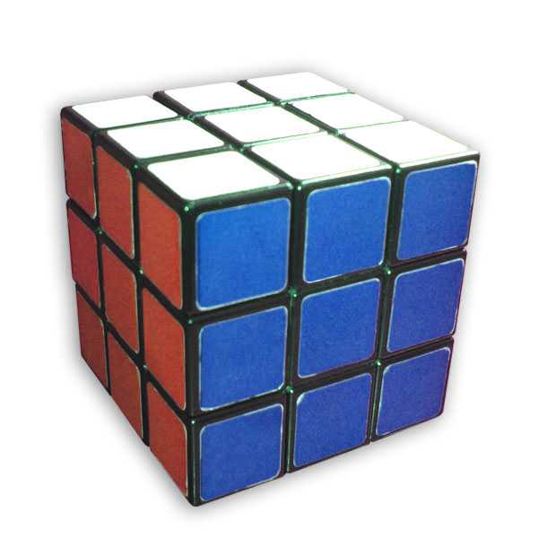

Tüm Küp Türleri
Bu sayfada popüler zeka küplerinin detaylı tanıtımlarını bulabilirsiniz. Çözüm rehberlerine Çözüm Rehberi sayfasından ulaşabilirsiniz.
🟩 2x2 Pocket Küp

2x2 Pocket Küp, Rubik küpünün en küçük versiyonudur. Sadece köşe parçalarından oluşur. Toplam 3.674.160 farklı kombinasyona sahiptir.
Özellikler:
- 8 köşe parçası, kenar parçası yok
- Maksimum 11 hamle ile çözülebilir
- Başlangıç seviyesi için ideal
Çözüm Yöntemleri:
- Ortega: İki yüzü bağımsız çözer
- CLL: İleri seviye, tek adımda son katman
🟦 3x3 Rubik Küpü

3x3 Rubik Küpü, dünyanın en popüler zeka oyuncağıdır. 43 kentilyon farklı kombinasyona sahiptir ancak en fazla 20 hamle ile çözülebilir.
Özellikler:
- 8 köşe, 12 kenar, 6 merkez — toplam 26 parça
- God's Number: 20 hamle
Çözüm Yöntemleri:
- Layer by Layer: En kolay başlangıç yöntemi
- CFOP: Speedcubing'de en yaygın
- Roux: Blok tabanlı alternatif
🟧 4x4 Rubik Küpü
4x4 Rubik Küpü, 3x3'ün büyük kardeşidir. Merkez parçaları sabit değildir ve parite hataları oluşabilir.
Özellikler:
- 24 merkez, 24 kenar, 8 köşe — toplam 56 parça
- OLL ve PLL Parity sorunları
Çözüm:
- Reduction: 4x4'ü 3x3'e dönüştürüp çözme
🪞 Mirror Cube (Ayna Küpü)

Mirror Cube, görsel olarak en etkileyici zeka küplerinden biridir. 3x3 ile aynı mekanizmaya sahiptir ancak renk yerine parça boyutları ile çözülür.
Çözülmüş halinde düzgün bir küp şeklindedir. Karıştırıldığında garip ve düzensiz bir şekil alır.
Özellikler:
- 3x3 ile aynı mekanik yapı (8 köşe, 12 kenar, 6 merkez)
- Tüm parçalar tek renk (gümüş veya altın)
- Parçalar farklı boyutlarda — çözüm şekle dayanır
- Karıştırıldığında küp olmaktan çıkar
Neden Özeldir?
- 🎭 Renk yok — parça kalınlığına bakarsınız
- 🧊 Şekil değişir — çözüldüğünde küp olur
- 👀 Dışarıdan imkansız görünür ama 3x3 bilen çözer
Mirror Cube vs 3x3:
| Özellik | 3x3 | Mirror Cube |
|---|---|---|
| Parça sayısı | 26 | 26 (aynı) |
| Çözüm ipucu | Renkler | Parça boyutları |
| Algoritmalar | Standart | Aynı |
| Şekil değişimi | Hayır | Evet |
🔺 Pyraminx

Pyraminx, piramit şeklinde bir zeka bulmacasıdır. 933.120 farklı kombinasyona sahiptir.
Özellikler:
- 4 üçgen yüz
- 4 uç, 6 kenar, 4 merkez parçası
- Çözümü çok kolay ve sezgisel
⬟ Megaminx

Megaminx, 12 yüzlü dodekahedron şeklindedir. 3x3 bilgisiyle çözülebilir.
Özellikler:
- 12 beşgen yüz, 12 farklı renk
- 20 köşe, 30 kenar, 12 merkez
⬠ Kilominx
Kilominx, Megaminx'in basitleştirilmiş versiyonudur. Sadece köşe parçalarından oluşur.
Özellikler:
- 12 beşgen yüz, sadece 20 köşe
- 2x2 mantığı ile çözülür
💎 Skewb

Skewb, köşelerden dönen benzersiz bir küptür.
Özellikler:
- 8 köşe, 6 merkez
- 120° dönüş, maksimum 11 hamle
📍 Zeka Küpü Nereden Alınır?
Online: Trendyol, Hepsiburada, Amazon | Fiziksel: Toyzz Shop, D&R